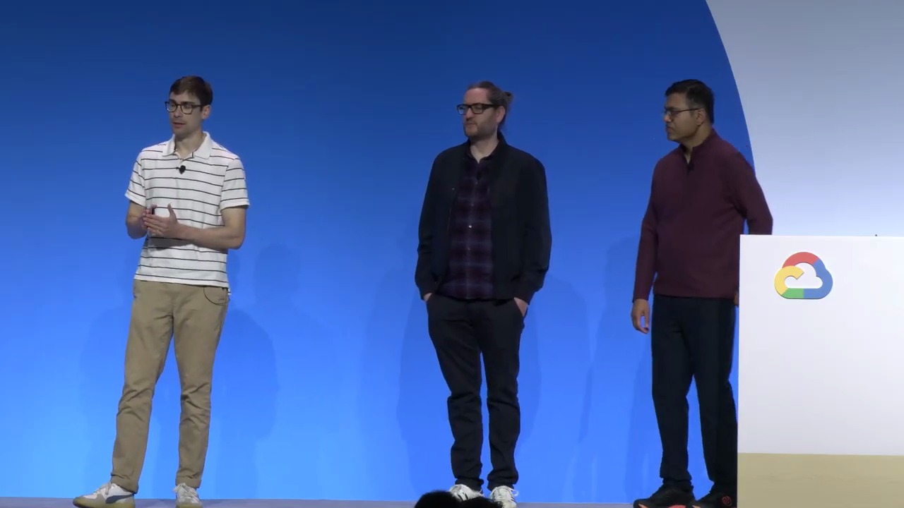
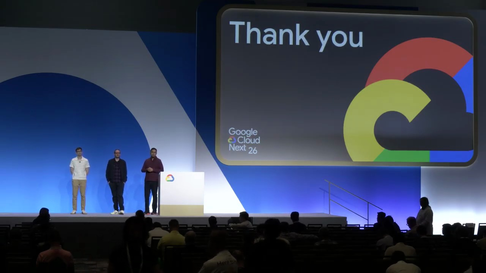
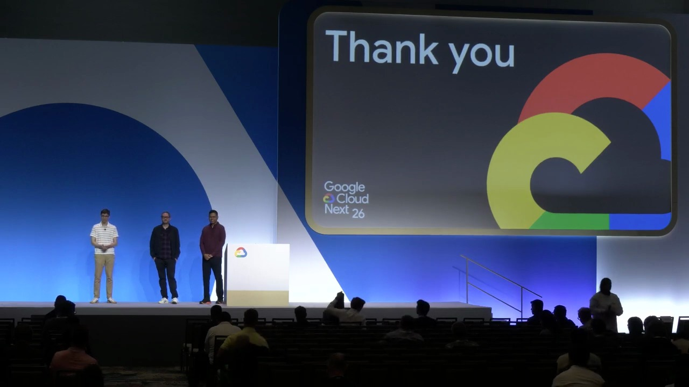

Key Moments





Summary & Script
Gemini Enterprise app: Building the connected enterprise
Source: https://youtu.be/tBw7IVlnwdY
Video ID: tBw7IVlnwdY
Building the Connected Enterprise – Gemini Enterprise Overview
Video: Building the Connected Enterprise (YouTube)
Presenters: Demetri (Director of Product, Gemini Enterprise Agents), Sammy Akram (Product Manager, Context & Collaboration), Florian (Data Scientist, Signal Iduna)
1️⃣ Quick Reality Check
| Metric | Insight |
|---|---|
| Google Trends “agent” | Hockey‑stick growth – agents are exploding in interest. |
| 35 % of employees | Report broad adoption of AI agents at work. |
| >25 % of executives | Increased AI‑agent spend by > 25 % YoY. |
| Pain points | • Siloed data & tools • No workflow continuity • Budget visibility gaps • Cyber‑security & governance headaches |
Bottom line: Enterprise AI agents are accelerating, but fragmentation and governance issues prevent them from delivering their full value.
2️⃣ Gemini Enterprise – The “Fabric of Universal Intelligence”
Core Vision
A single front‑door AI platform that adapts to existing workflows instead of forcing users to learn a new one.
Three Pillars
| Pillar | What it means | Key capabilities |
|---|---|---|
| 1️⃣ Ask & Create Anything | Break down creation silos. | • Gemini 3.1 Pro + Flash for high‑frequency reasoning • Generative media: Nano Banana 2 (images), Veo 3 (video) • Real‑time voice assistant • Multimodal ingestion (PDF, CSV, code repos) |
| 2️⃣ Deploy Agents to Get Work Done | Move from passive chat to active execution. | • Central Agent Registry (Google native, pre‑built, third‑party, custom) • One‑click company‑wide rollout with built‑in governance & IAM • Visual Agent Designer with natural‑language templates, conditional loops, deterministic & agentic logic, human‑in‑the‑loop checks • Iterative improvement via feedback & smart‑prompt suggestions |
| 3️⃣ Harness Deep Context | AI lives inside your actual workplace. | • Continuous access to Drive, Gmail, Calendar, Outlook, OneDrive, etc. • “Saved memories” (brand voice, formatting preferences) • Persistent Project Workspaces that bind files, chats, and agents together • Team‑wide co‑creation chat where AI acts as a real‑time co‑author |
All three pillars are tied together with personalization, frictionless collaboration, and strict enterprise compliance (audit logs, model armor, PII masking, IAM‑based least‑privilege controls).
3️⃣ Pillar Deep‑Dive
🎨 1️⃣ Ask & Create – Canvas
An interactive side‑panel inside the Gemini app
| Feature | Detail |
|---|---|
| Automatic activation | Starts when you begin a long‑form task. |
| Context‑aware drafts | Pulls chat, connectors, and source data to produce a first draft. |
| Editor options | • Embedded Google Docs/Slides (full feature set) • Native editor with AI sliders (tone, length) • Version tracking, one‑click export (PDF, PPT). |
| From docs → decks | Same conversational context can instantly generate an 8‑12‑slide deck. |
| No‑Workspace fallback | Native HTML editor + export for non‑Google users. |
🤖 2️⃣ Get It Done – Agent Designer
Highlights
- Natural‑language + template gallery – anyone can spin up an agent quickly.
- Complex logic – snap together conditionals, loops, agentic & deterministic steps.
- Human‑in‑the‑loop – gate critical actions for trust.
- Iterative refinement – feedback → auto‑suggested smarter prompts.
- Debug & playback – step through each action; deeper debugging coming in Early Access Preview (EAP).
One‑click deployment pushes agents enterprise‑wide while preserving IAM roles and policy gateways.
📚 3️⃣ Context – Projects & Persistent Workspace
Why context matters – off‑the‑shelf LLMs know the world, not your world (internal acronyms, quarterly goals, team nuances).
Implementation
- Living extension of your tools – reads Drive, Gmail, Calendar, Outlook, OneDrive, etc.
- Saved memories – explicit brand voice, formatting style, etc.
- Projects – bounded, persistent workspaces that hold files, chats, and agents.
- Team co‑creation – a shared group chat where humans and AI edit assets in real time (e.g., launch email, slide deck).
- On‑boarding – a new stakeholder can instantly get an AI‑generated project overview instead of a manual briefing.
4️⃣ Governance & Security – Non‑Negotiable
| Control | Description |
|---|---|
| Audit logs & observability | Every invocation, tool call, and data access is recorded. |
| Model armor | Protects against prompt injection, filters harmful content, auto‑masks PII. |
| IAM inheritance | Leverages existing corporate identity, enforces least‑privilege per user/tool/agent. |
| Policy gateways | Administrators set granular policies for who can run which agents or access which data. |
5️⃣ Real‑World Adoption – Signal Iduna Case Study
Company: Large German insurance firm (120‑year heritage, sponsor of Borussia Dortmund).
Challenge: Legacy paper‑based processes, strict regulatory governance, need for AI literacy.
Solution: Launched T‑Mobile Enterprise (Signal Iduna’s internal AI platform) built on Gemini Enterprise.
Outcome (as shared before transcript cut‑off):
- Central AI hub with built‑in governance.
- Company‑wide AI literacy programs.
- Seamless integration with existing security architecture.
(Full details were truncated in the source transcript.)
6️⃣ Key Takeaways
- Enterprise AI adoption is booming, but fragmentation, context loss, and governance are still major obstacles.
- Gemini Enterprise offers a universal intelligence fabric—a single, compliant front‑door that adapts to user workflows.
- The platform’s three pillars (Ask & Create, Deploy Agents, Deep Context) are tightly integrated through Canvas, Agent Designer, and Project workspaces.
- Collaboration is baked in: shared project spaces and co‑creation chat keep teams aligned and eliminate knowledge silos.
- Governance isn’t an add‑on—it’s woven into every layer (audit logs, model armor, IAM‑based controls).
- Early adopters like Signal Iduna are already leveraging the platform to modernize legacy processes while meeting stringent regulatory requirements.
7️⃣ Notable Quotes
- “The era of copy‑pasting from an AI chat window is behind us.” – Sammy Akram
- “We’re building a single pane of glass for your entire organization.” – Dimitri (Director of Product)
- “AI tools restrict users to solo interactions; work is a team sport.” – Sammy Akram
- “Trust is non‑negotiable – ungoverned AI is a security risk, full stop.” – Sammy Akram
Bottom line: Gemini Enterprise positions itself as the central, secure, context‑aware AI hub that lets enterprises move from fragmented tool fatigue to a unified, collaborative, and governed AI‑first workflow.
Podcast Script
JORDAN: Hey everyone, welcome back to the Connected Enterprise podcast. I'm Jordan, your detail‑driven host, and with me as always is Mike, the big‑picture thinker.
MIKE: Thanks, Jordan! Today we’re diving into a fascinating session from the Gemini Enterprise team about building a “fabric of universal intelligence” for the modern workplace.
JORDAN: Right, the transcript starts with Demetri, the product director, setting the stage—AI agents are exploding in adoption, but they’re also creating new silos, tool fatigue, and governance headaches.
MIKE: Exactly, it’s a classic case of “the cure is worse than the disease” if you don’t have a unified front door. That’s why the Gemini Enterprise app is pitching itself as that single entry point.
JORDAN: Sammy then breaks down the first pillar—“Ask and create anything.” She mentions Gemini 3.1 Pro, Flash, Nano Banana 2, and Veo 3, which together enable text, image, and video generation without ever leaving the app.
MIKE: And the real kicker is Canvas, that side‑by‑side editor that pops up automatically when you start a long document. No more copy‑pasting chat answers into Google Docs or PowerPoint.
JORDAN: For teams that don’t use Google Workspace, there’s a native editor with AI sliders for tone, length, and version tracking—so the experience is truly platform‑agnostic.
MIKE: Moving to the second pillar, Demetri talks about agents as an “active execution engine.” He frames the Gemini Enterprise app as a single pane of glass where you can register, design, and deploy agents across the organization with a click.
JORDAN: The agent designer sounds powerful: natural‑language templates, conditional loops, agentic versus deterministic logic, and even human‑in‑the‑loop checks for critical actions. And because it’s iterative, users can give feedback and the system suggests smarter prompts.
MIKE: That touches on trust, which is the third pillar—deep integrated context. Sammy points out that off‑the‑shelf LLMs don’t know your internal acronyms or quarterly goals, so Gemini Enterprise lives inside your existing tools—Drive, Gmail, Outlook, OneDrive—learning your patterns and storing explicit “saved memories.”
JORDAN: The idea of “projects” is their answer to persistence and collaboration. A project is a bounded workspace where files, chats, and agents stay together, creating a shared brain that new stakeholders can instantly catch up on.
MIKE: And the co‑creation chat inside a project lets the AI act as a real‑time co‑author—one person asks for a launch email, another tweaks urgency, and the AI updates the draft on the fly. That feels like the future of collaborative writing.
JORDAN: Governance isn’t an afterthought either. The platform inherits your existing IAM roles, enforces least‑privilege access, logs every invocation, and uses “model armor” to block prompt injections and mask PII.
MIKE: Finally, we get a glimpse of real‑world impact from Florian at Signal Iduna, a major German insurer. They’ve rolled out Gemini Enterprise—called T‑Mobile Enterprise internally—to modernize a paper‑heavy, highly regulated environment while pushing AI literacy across the firm.
JORDAN: So, to sum up: Gemini Enterprise aims to solve fragmentation with a unified front door, empower anyone to build sophisticated agents, and anchor everything in persistent, contextual, and governed collaboration.
MIKE: If those ideas stick, we could finally see AI agents that actually boost productivity instead of adding more tabs to our browsers. Thanks for tuning in, and we’ll catch you next time on the Connected Enterprise.
JORDAN: Bye!
MIKE: See you soon!